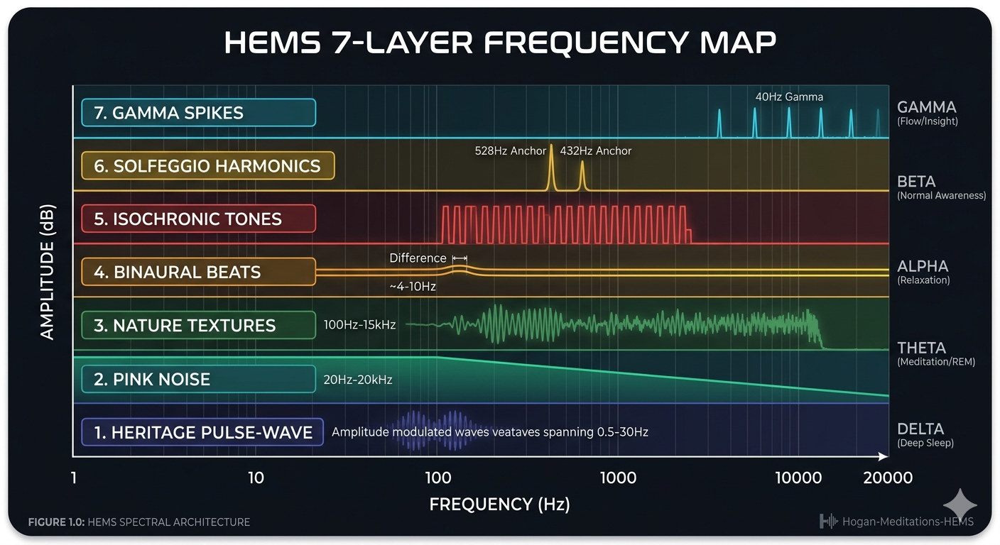
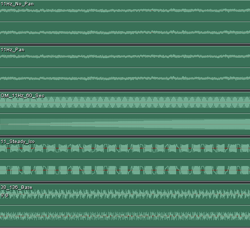

The Heritage Wave: A 20-Year Legacy
Most modern meditation apps rely on flat, digital tones. HEMS is different. It is built on a "Heritage" foundation—reviving a powerful, esoteric modulation technique from the early 2000s known as Amplitudinal Pulse-Waving.
This method doesn't just play a sound; it "waves" the entire audio spectrum to match biological brainwave cycles. It creates a physical sensation of the music "breathing" with you, providing a significantly deeper level of entrainment than standard binaural beats alone.
HEMS Spectral Architecture

Figure 1.0: Visual representation of the concurrent frequency layers within the HEMS engine.
The 7-Layer Audio Architecture
HEMS is a precision-engineered environment where every decibel serves a mathematical purpose. We utilize a stacked 7-layer approach:
- The Heritage Pulse-Wave: Structural volume modulation that "waves" audio to stimulate Alpha, Theta, or Delta states.
- Pink Noise: A spectral floor that mimics natural power laws and masks external distractions.
- Nature Textures: High-fidelity recordings of Irish forests for evolutionary grounding and safety.
- Binaural Beats: Precision frequency offsets to encourage Hemispheric Synchronization.
- Isochronic Tones: High-intensity rhythmic pacing for rapid neural "lock-in."
- Solfeggio Harmonics: Ancient frequency anchors (528Hz/432Hz) for tonal beauty and resonance.
- Gamma Spikes: Subtle 40Hz pulses designed to maintain "The Watcher"—keeping the mind lucid during deep relaxation.
LEARNING YOUR SCALES
The H.E.M.S. Guide for Safe Entrainment
"Meditation is a skill of the nervous system. You wouldn't attempt a Piano concerto before you've practiced your scales."
At the H.E.M.S. Laboratory, we treat brainwave entrainment with the same respect an engineer treats a high-voltage circuit. Our 7-layer architecture is designed to be effective—and because it is effective, it must be approached with wisdom.
Why the "Chakra Wash Meditation"?
For our new 50-minute protocol, we have chosen a Chakra Wash in the Mountain’s Water rather than a "Deep Dive" into a single frequency.
- The Transition: Deep Delta states (below 4Hz) can be profound. At these levels, the line between waking and dreaming thins; lucid visions are common. This can be startling if you aren't prepared.
- The Flow: This protocol acts as a "gentle tour." Instead of anchoring you in one heavy frequency, it washes through the centers, spending 6–7 minutes at each level.
- The Safety: This movement prevents the "Rolling Ball" effect from gaining too much momentum. It allows your brain to become accustomed to being steered before you go for a deep-sea dive.
Director's Advice
Respect the Lucidity: If you experience vivid imagery or a sense of "detachment," do not be alarmed. This is simply your brain synchronized at a lower frequency. Breathe into it and trust the grounding sequence at the end of the track.
We recommend at least 10 sessions with the "Chakra Wash" before moving into targeted 50-minute Delta work or single-chakra intensives. If you are confused about what meditation is right for you please feel free to contact us, contact page above or email and social media links below.
THE FREQUENCY ARCHITECTURE
Binaural Targets & Carrier Tone Mapping for the Chakra Wash
| Energy Center |
Target (Hz) |
Carrier (Hz) |
Primary Benefit |
| Root |
8 Hz |
194.18 Hz |
Physical Energy & Vitality [256Hz] |
| Sacral |
9 Hz |
210.42 Hz |
Emotional Balance [288Hz] |
| Solar Plexus |
10 Hz |
126.22 Hz |
Mood & Alertness [320Hz] |
| Heart |
10.5 Hz |
136.10 Hz |
Relaxation & Harmony [341Hz] |
| Throat |
12 Hz |
141.27 Hz |
Mental Stability & Clarity [384Hz] |
| Brow |
13 Hz |
221.23 Hz |
Intuition & Wisdom [426.7Hz] |
| Crown |
15 Hz |
172.06 Hz |
Spiritual Integration [480Hz] |
A Note on Carrier Tones: Most recordings overlook the carrier tone. At H.E.M.S., we utilize the Hans Cousto planetary tones[cite: 15]. These tones are not just vessels; they are mathematically tuned to activate specific centers of consciousness[cite: 11, 13].
THE MASTER BLUEPRINT
Inside the 7-Layer Neural Architecture

Studio Screenshot: 5-Track Mixdown Architecture
True brainwave entrainment requires more than a single tone. At the H.E.M.S. Laboratory, we utilize a 7-Layer Architecture to ensure maximum cortical engagement and a seamless transition between states of consciousness.
Technical Track Breakdown:
- Tracks 1 & 2 (Spatial Interference): A combination of static and panned 11Hz layers designed to engage the auditory cortex through spatial 'searching'[cite: 10, 20].
- Track 3 (The H.E.M.S. Ramp): A precise 60-second frequency slide that prevents 'neural shock' and allows the brain to follow the descent naturally.
- Track 4 (Steady Iso-Pulse): The high-energy metronome that provides the primary entrainment foundation for the session[cite: 21].
- Track 5 (Planetary Carrier): The 136.10 Hz 'Om' base, tuned to the Hans Cousto Heart Chakra frequency for deep physical resonance[cite: 15, 17].
By layering these distinct signals, we create a Frequency Following Response (FFR) that is far more robust than standard binaural beats. This is the difference between simply listening to music and undergoing a structured neural realignment[cite: 11, 20].